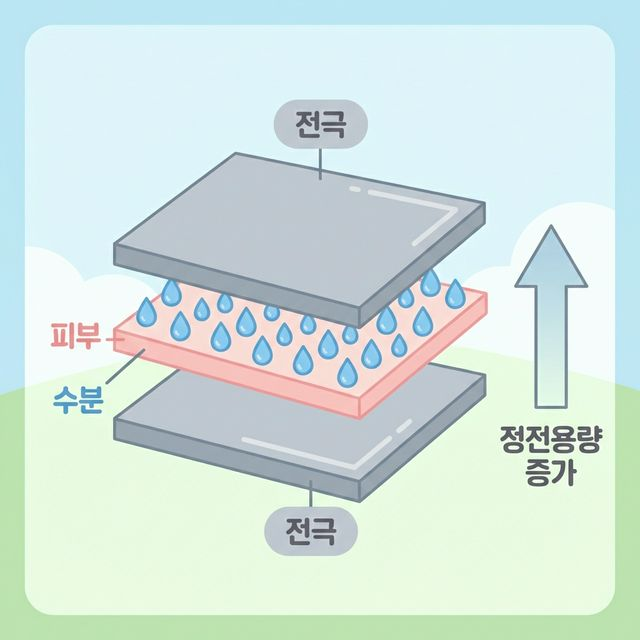
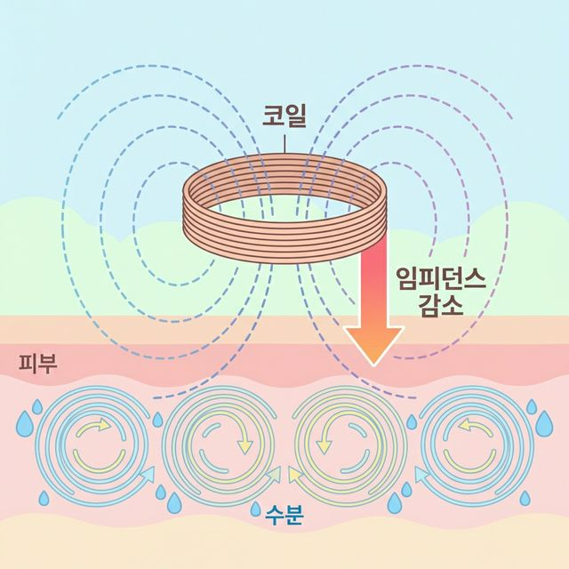

맴돌이전류(Eddy Current)를 이용한 비접촉 피부 수분 측정 실험 프로젝트.
비전공 입문생 3명이 12주 만에 논문 수준의 데이터를 만들어내는 도전의 여정.
이 숫자가 0.85 이상이면 비접촉 센서가 접촉식 표준장비(Corneometer)와 거의 비슷한 정확도를 가진다는 것을 증명합니다.
여러 번 측정해도 결과가 일관되게 나와야 합니다. 측정 편차 5% 이내가 목표입니다.
꾹 누르는 압력 때문에 피부 속 수분이 옆으로 밀려나 오차가 생깁니다. 마치 젖은 스폰지를 누르면 물이 짜지는 것과 같습니다.
피부를 건드리지 않아 수분의 원래 상태를 그대로 유지합니다. 위생적이며, 화장품이 흡수되는 찰나의 순간도 방해 없이 관찰 가능합니다.
| 수분량 | 상태 | 건포도 비유 | Corneometer 기준치 |
|---|---|---|---|
| 30% 이상 | 탄력있고 부드러움 | 물에 불린 빵빵한 건포도 | > 50 AU |
| 15~30% | 약간 당김 | 정상적인 주름진 건포도 | 30~50 AU |
| 15% 미만 | 거칠고 하얀 각질 | 바짝 마른 딱딱한 건포도 | < 30 AU |
피부를 세게 누를수록 각질층안의 수분이 모여 오차가 발생합니다.
한 센서로 여러 사람 피부를 찍으면 피부 세균이 옮을 수 있습니다.
화장품이 스며드는 과정을 실시간으로 찍어볼 수 없습니다.
| 주파수 크기 | 전파 성질 | 침투 깊이 |
|---|---|---|
| 낮은 주파수 (1 MHz) | 벽을 잘 뚫고 깊게 관통함 | 수백 μm (진피층까지 닿음) |
| 높은 주파수 (100 MHz) | 표피 효과로 인해 얕게 맴돎 | 약 15 μm (각질층에만 집중!) |
평균값이 같아도 퍼진 정도가 다릅니다. 우리 센서가 '일관되게' 정확하려면 과녁 중심에 화살이 모이는 것처럼 표준편차가 아주 작아야(오차범위 5% 이내) 합니다.
우리가 만든 비접촉 센서와 병원의 500만원짜리 Corneometer 기기가 얼마나 비슷한 결과를 뱉어내는지 보여주는 수치입니다.
• R² = 1.0 (일치가 완벽함)
• R² > 0.85 (우리 팀의 합격선! 논문 통과 기준)
"두 기기(우리 센서 vs 표준 장비)의 차이점"을 시각화합니다. 차이가 일정 범위(LoA) 안에 들어오면 우리 센서가 '합격'임을 의미합니다. 전문적인 과학 논문의 필수 그래프입니다.
비교 대상이 없으면 변화가 '진짜'인지 알 수 없습니다.
환경(온도/습도) 때문에 피부 수분이 변한 건지, 보습제 때문에 변한 건지 구분하기 위해 반드시 필요합니다.
| 컵 번호 | 소금 양(g) | 물 | 모사하는 피부 상태 |
|---|---|---|---|
| 1번 컵 | 0 g | 100 mL | 극건성 (수분 거의 없음) |
| 2번 컵 | 0.1 g | 100 mL | 건성 |
| 3번 컵 | 0.5 g | 100 mL | 정상 피부 |
| 4번 컵 | 0.9 g | 100 mL | 생리식염수 수준 (수분 충분) |
| 5번 컵 | 2.0 g | 100 mL | 아주 땀나고 촉촉한 상태 |
날짜: ______ 측정자: ______ 실내온도: ___°C 실내습도: ___%
| 컵 | 측정1 | 측정2 | 측정3 | 측정4 | 측정5 | 평균 |
|---|---|---|---|---|---|---|
| 1 (0g) | ||||||
| 2 (0.1g) | ||||||
| 3 (0.5g) | ||||||
| 4 (0.9g) | ||||||
| 5 (2.0g) |
| 시간 | 기기 | A(바셀린) 평균 | B(수분크림) 평균 | C(무도포) 평균 |
|---|---|---|---|---|
| 기저(T=0) | 비접촉 센서 | |||
| Corneometer | ||||
| T=1분 | 비접촉 센서 | |||
| Corneometer | ||||
| T=5분 | 비접촉 센서 | |||
| Corneometer | ||||
| T=10분 | 비접촉 센서 | |||
| Corneometer | ||||
| T=30분 | 비접촉 센서 | |||
| Corneometer |
통계학에서 중심극한정리상 '의미 있는 패턴'을 찾아내고 신뢰도(p-value < 0.05)를 가지려면 최소 30명(n=30)의 대규모 데이터 확보가 필요합니다.
모집 결과가 한쪽에 쏠리지 않도록 조절합니다.
• 그룹 1 (Corne < 30) : 10명
• 그룹 2 (Corne 30~50) : 10명
• 그룹 3 (Corne > 50) : 10명


| 항목 | 코네오미터 (정전용량) | 비접촉 센서 (임피던스) |
|---|---|---|
| 접촉 여부 | 피부에 직접 닿음 | 비접촉 (코일을 띄움) |
| 측정 원리 | 정전용량 증가 ↑ | 임피던스 감소 ↓ |
| 주파수 | 낮은 주파수 (~1 MHz) | 높은 주파수 (~100 MHz) |
| 위생 | 전극 살균/소독 필요 | 간편 (비접촉) |
#include <FreqCount.h>
void setup() {
Serial.begin(115200);
FreqCount.begin(1000); // 1초간 게이트 타임
}
void loop() {
if (FreqCount.available()) {
unsigned long count = FreqCount.read();
Serial.println(count);
}
}